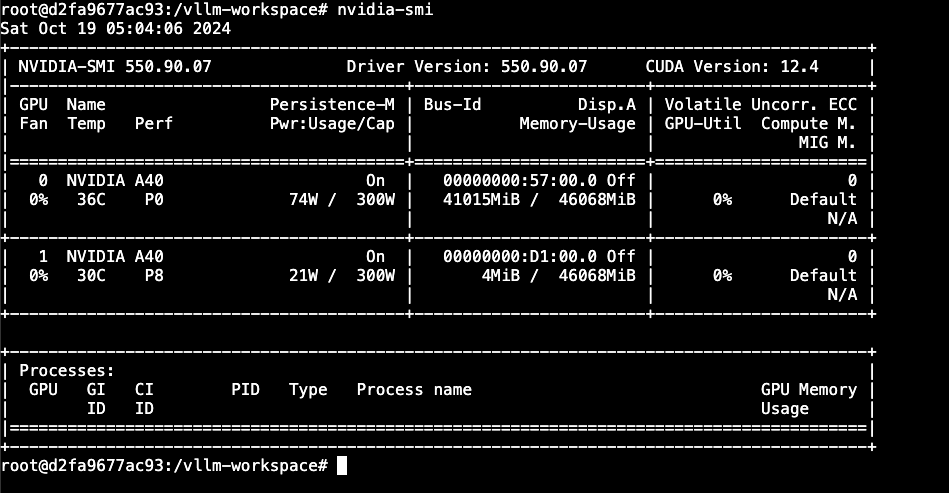

<!doctype html>
<html lang="en" class="no-js">
  <head>
    
      <meta charset="utf-8">
      <meta name="viewport" content="width=device-width,initial-scale=1">
      
        <meta name="description" content="vLLM 의 사용법, 그리고 cloud 환경에서의 배포, 서빙을 설명합니다.">
      
      
      
        <link rel="canonical" href="https://jonhpark7966.github.io/vLLM_Course/QuickStartonRunPod/">
      
      
        <link rel="prev" href="..">
      
      
        <link rel="next" href="../MultiGPU/">
      
      
      <link rel="icon" href="../assets/images/favicon.png">
      <meta name="generator" content="mkdocs-1.6.0, mkdocs-material-9.5.28">
    
    
      
        <title>QuickStartonRunPod - vLLM COURSE!</title>
      
    
    
      <link rel="stylesheet" href="../assets/stylesheets/main.6543a935.min.css">
      
        
        <link rel="stylesheet" href="../assets/stylesheets/palette.06af60db.min.css">
      
      


    
    
      
    
    
      
        
        
        <link rel="preconnect" href="https://fonts.gstatic.com" crossorigin>
        <link rel="stylesheet" href="https://fonts.googleapis.com/css?family=Noto+Sans+KR:300,300i,400,400i,700,700i%7CFira+Code:400,400i,700,700i&display=fallback">
        <style>:root{--md-text-font:"Noto Sans KR";--md-code-font:"Fira Code"}</style>
      
    
    
    <script>__md_scope=new URL("..",location),__md_hash=e=>[...e].reduce((e,_)=>(e<<5)-e+_.charCodeAt(0),0),__md_get=(e,_=localStorage,t=__md_scope)=>JSON.parse(_.getItem(t.pathname+"."+e)),__md_set=(e,_,t=localStorage,a=__md_scope)=>{try{t.setItem(a.pathname+"."+e,JSON.stringify(_))}catch(e){}}</script>
    
      

    
    
    
   <link href="../assets/stylesheets/glightbox.min.css" rel="stylesheet"/><style>
    html.glightbox-open { overflow: initial; height: 100%; }
    .gslide-title { margin-top: 0px; user-select: text; }
    .gslide-desc { color: #666; user-select: text; }
    .gslide-image img { background: white; }
    .gscrollbar-fixer { padding-right: 15px; }
    .gdesc-inner { font-size: 0.75rem; }
    body[data-md-color-scheme="slate"] .gdesc-inner { background: var(--md-default-bg-color);}
    body[data-md-color-scheme="slate"] .gslide-title { color: var(--md-default-fg-color);}
    body[data-md-color-scheme="slate"] .gslide-desc { color: var(--md-default-fg-color);}</style> <script src="../assets/javascripts/glightbox.min.js"></script></head>
  
  
    
    
      
    
    
    
    
    <body dir="ltr" data-md-color-scheme="default" data-md-color-primary="blue" data-md-color-accent="blue">
  
    
    <input class="md-toggle" data-md-toggle="drawer" type="checkbox" id="__drawer" autocomplete="off">
    <input class="md-toggle" data-md-toggle="search" type="checkbox" id="__search" autocomplete="off">
    <label class="md-overlay" for="__drawer"></label>
    <div data-md-component="skip">
      
        
        <a href="#_1" class="md-skip">
          Skip to content
        </a>
      
    </div>
    <div data-md-component="announce">
      
    </div>
    
    
      

  

<header class="md-header md-header--shadow" data-md-component="header">
  <nav class="md-header__inner md-grid" aria-label="Header">
    <a href=".." title="vLLM COURSE!" class="md-header__button md-logo" aria-label="vLLM COURSE!" data-md-component="logo">
      
  
  <svg xmlns="http://www.w3.org/2000/svg" viewBox="0 0 24 24"><path d="M12 8a3 3 0 0 0 3-3 3 3 0 0 0-3-3 3 3 0 0 0-3 3 3 3 0 0 0 3 3m0 3.54C9.64 9.35 6.5 8 3 8v11c3.5 0 6.64 1.35 9 3.54 2.36-2.19 5.5-3.54 9-3.54V8c-3.5 0-6.64 1.35-9 3.54Z"/></svg>

    </a>
    <label class="md-header__button md-icon" for="__drawer">
      
      <svg xmlns="http://www.w3.org/2000/svg" viewBox="0 0 24 24"><path d="M3 6h18v2H3V6m0 5h18v2H3v-2m0 5h18v2H3v-2Z"/></svg>
    </label>
    <div class="md-header__title" data-md-component="header-title">
      <div class="md-header__ellipsis">
        <div class="md-header__topic">
          <span class="md-ellipsis">
            vLLM COURSE!
          </span>
        </div>
        <div class="md-header__topic" data-md-component="header-topic">
          <span class="md-ellipsis">
            
              QuickStartonRunPod
            
          </span>
        </div>
      </div>
    </div>
    
      
        <form class="md-header__option" data-md-component="palette">
  
    
    
    
    <input class="md-option" data-md-color-media="" data-md-color-scheme="default" data-md-color-primary="blue" data-md-color-accent="blue"  aria-label="Switch to dark mode"  type="radio" name="__palette" id="__palette_0">
    
      <label class="md-header__button md-icon" title="Switch to dark mode" for="__palette_1" hidden>
        <svg xmlns="http://www.w3.org/2000/svg" viewBox="0 0 24 24"><path d="M12 8a4 4 0 0 0-4 4 4 4 0 0 0 4 4 4 4 0 0 0 4-4 4 4 0 0 0-4-4m0 10a6 6 0 0 1-6-6 6 6 0 0 1 6-6 6 6 0 0 1 6 6 6 6 0 0 1-6 6m8-9.31V4h-4.69L12 .69 8.69 4H4v4.69L.69 12 4 15.31V20h4.69L12 23.31 15.31 20H20v-4.69L23.31 12 20 8.69Z"/></svg>
      </label>
    
  
    
    
    
    <input class="md-option" data-md-color-media="" data-md-color-scheme="slate" data-md-color-primary="blue" data-md-color-accent="blue"  aria-label="Switch to light mode"  type="radio" name="__palette" id="__palette_1">
    
      <label class="md-header__button md-icon" title="Switch to light mode" for="__palette_0" hidden>
        <svg xmlns="http://www.w3.org/2000/svg" viewBox="0 0 24 24"><path d="M12 18c-.89 0-1.74-.2-2.5-.55C11.56 16.5 13 14.42 13 12c0-2.42-1.44-4.5-3.5-5.45C10.26 6.2 11.11 6 12 6a6 6 0 0 1 6 6 6 6 0 0 1-6 6m8-9.31V4h-4.69L12 .69 8.69 4H4v4.69L.69 12 4 15.31V20h4.69L12 23.31 15.31 20H20v-4.69L23.31 12 20 8.69Z"/></svg>
      </label>
    
  
</form>
      
    
    
      <script>var media,input,key,value,palette=__md_get("__palette");if(palette&&palette.color){"(prefers-color-scheme)"===palette.color.media&&(media=matchMedia("(prefers-color-scheme: light)"),input=document.querySelector(media.matches?"[data-md-color-media='(prefers-color-scheme: light)']":"[data-md-color-media='(prefers-color-scheme: dark)']"),palette.color.media=input.getAttribute("data-md-color-media"),palette.color.scheme=input.getAttribute("data-md-color-scheme"),palette.color.primary=input.getAttribute("data-md-color-primary"),palette.color.accent=input.getAttribute("data-md-color-accent"));for([key,value]of Object.entries(palette.color))document.body.setAttribute("data-md-color-"+key,value)}</script>
    
    
    
      <label class="md-header__button md-icon" for="__search">
        
        <svg xmlns="http://www.w3.org/2000/svg" viewBox="0 0 24 24"><path d="M9.5 3A6.5 6.5 0 0 1 16 9.5c0 1.61-.59 3.09-1.56 4.23l.27.27h.79l5 5-1.5 1.5-5-5v-.79l-.27-.27A6.516 6.516 0 0 1 9.5 16 6.5 6.5 0 0 1 3 9.5 6.5 6.5 0 0 1 9.5 3m0 2C7 5 5 7 5 9.5S7 14 9.5 14 14 12 14 9.5 12 5 9.5 5Z"/></svg>
      </label>
      <div class="md-search" data-md-component="search" role="dialog">
  <label class="md-search__overlay" for="__search"></label>
  <div class="md-search__inner" role="search">
    <form class="md-search__form" name="search">
      <input type="text" class="md-search__input" name="query" aria-label="Search" placeholder="Search" autocapitalize="off" autocorrect="off" autocomplete="off" spellcheck="false" data-md-component="search-query" required>
      <label class="md-search__icon md-icon" for="__search">
        
        <svg xmlns="http://www.w3.org/2000/svg" viewBox="0 0 24 24"><path d="M9.5 3A6.5 6.5 0 0 1 16 9.5c0 1.61-.59 3.09-1.56 4.23l.27.27h.79l5 5-1.5 1.5-5-5v-.79l-.27-.27A6.516 6.516 0 0 1 9.5 16 6.5 6.5 0 0 1 3 9.5 6.5 6.5 0 0 1 9.5 3m0 2C7 5 5 7 5 9.5S7 14 9.5 14 14 12 14 9.5 12 5 9.5 5Z"/></svg>
        
        <svg xmlns="http://www.w3.org/2000/svg" viewBox="0 0 24 24"><path d="M20 11v2H8l5.5 5.5-1.42 1.42L4.16 12l7.92-7.92L13.5 5.5 8 11h12Z"/></svg>
      </label>
      <nav class="md-search__options" aria-label="Search">
        
        <button type="reset" class="md-search__icon md-icon" title="Clear" aria-label="Clear" tabindex="-1">
          
          <svg xmlns="http://www.w3.org/2000/svg" viewBox="0 0 24 24"><path d="M19 6.41 17.59 5 12 10.59 6.41 5 5 6.41 10.59 12 5 17.59 6.41 19 12 13.41 17.59 19 19 17.59 13.41 12 19 6.41Z"/></svg>
        </button>
      </nav>
      
    </form>
    <div class="md-search__output">
      <div class="md-search__scrollwrap" tabindex="0" data-md-scrollfix>
        <div class="md-search-result" data-md-component="search-result">
          <div class="md-search-result__meta">
            Initializing search
          </div>
          <ol class="md-search-result__list" role="presentation"></ol>
        </div>
      </div>
    </div>
  </div>
</div>
    
    
  </nav>
  
</header>
    
    <div class="md-container" data-md-component="container">
      
      
        
          
        
      
      <main class="md-main" data-md-component="main">
        <div class="md-main__inner md-grid">
          
            
              
              <div class="md-sidebar md-sidebar--primary" data-md-component="sidebar" data-md-type="navigation" >
                <div class="md-sidebar__scrollwrap">
                  <div class="md-sidebar__inner">
                    


<nav class="md-nav md-nav--primary" aria-label="Navigation" data-md-level="0">
  <label class="md-nav__title" for="__drawer">
    <a href=".." title="vLLM COURSE!" class="md-nav__button md-logo" aria-label="vLLM COURSE!" data-md-component="logo">
      
  
  <svg xmlns="http://www.w3.org/2000/svg" viewBox="0 0 24 24"><path d="M12 8a3 3 0 0 0 3-3 3 3 0 0 0-3-3 3 3 0 0 0-3 3 3 3 0 0 0 3 3m0 3.54C9.64 9.35 6.5 8 3 8v11c3.5 0 6.64 1.35 9 3.54 2.36-2.19 5.5-3.54 9-3.54V8c-3.5 0-6.64 1.35-9 3.54Z"/></svg>

    </a>
    vLLM COURSE!
  </label>
  
  <ul class="md-nav__list" data-md-scrollfix>
    
      
      
  
  
  
  
    <li class="md-nav__item">
      <a href=".." class="md-nav__link">
        
  
  <span class="md-ellipsis">
    Contents
  </span>
  

      </a>
    </li>
  

    
      
      
  
  
    
  
  
  
    <li class="md-nav__item md-nav__item--active">
      
      <input class="md-nav__toggle md-toggle" type="checkbox" id="__toc">
      
      
      
        <label class="md-nav__link md-nav__link--active" for="__toc">
          
  
  <span class="md-ellipsis">
    QuickStartonRunPod
  </span>
  

          <span class="md-nav__icon md-icon"></span>
        </label>
      
      <a href="./" class="md-nav__link md-nav__link--active">
        
  
  <span class="md-ellipsis">
    QuickStartonRunPod
  </span>
  

      </a>
      
        

<nav class="md-nav md-nav--secondary" aria-label="Table of contents">
  
  
  
  
    <label class="md-nav__title" for="__toc">
      <span class="md-nav__icon md-icon"></span>
      Table of contents
    </label>
    <ul class="md-nav__list" data-md-component="toc" data-md-scrollfix>
      
        <li class="md-nav__item">
  <a href="#_1" class="md-nav__link">
    <span class="md-ellipsis">
      직접 돌려보기!
    </span>
  </a>
  
</li>
      
        <li class="md-nav__item">
  <a href="#arguments" class="md-nav__link">
    <span class="md-ellipsis">
      Arguments
    </span>
  </a>
  
    <nav class="md-nav" aria-label="Arguments">
      <ul class="md-nav__list">
        
          <li class="md-nav__item">
  <a href="#_2" class="md-nav__link">
    <span class="md-ellipsis">
      메모리 관련
    </span>
  </a>
  
</li>
        
          <li class="md-nav__item">
  <a href="#multi-gpu" class="md-nav__link">
    <span class="md-ellipsis">
      Multi GPU 관련
    </span>
  </a>
  
</li>
        
          <li class="md-nav__item">
  <a href="#quantization" class="md-nav__link">
    <span class="md-ellipsis">
      Quantization 관련
    </span>
  </a>
  
</li>
        
      </ul>
    </nav>
  
</li>
      
        <li class="md-nav__item">
  <a href="#metrics" class="md-nav__link">
    <span class="md-ellipsis">
      Metrics
    </span>
  </a>
  
</li>
      
    </ul>
  
</nav>
      
    </li>
  

    
      
      
  
  
  
  
    <li class="md-nav__item">
      <a href="../MultiGPU/" class="md-nav__link">
        
  
  <span class="md-ellipsis">
    MultiGPU
  </span>
  

      </a>
    </li>
  

    
      
      
  
  
  
  
    <li class="md-nav__item">
      <a href="../RunpodServerless/" class="md-nav__link">
        
  
  <span class="md-ellipsis">
    RunpodServerless
  </span>
  

      </a>
    </li>
  

    
      
      
  
  
  
  
    <li class="md-nav__item">
      <a href="../Scaling/" class="md-nav__link">
        
  
  <span class="md-ellipsis">
    Scaling
  </span>
  

      </a>
    </li>
  

    
  </ul>
</nav>
                  </div>
                </div>
              </div>
            
            
              
              <div class="md-sidebar md-sidebar--secondary" data-md-component="sidebar" data-md-type="toc" >
                <div class="md-sidebar__scrollwrap">
                  <div class="md-sidebar__inner">
                    

<nav class="md-nav md-nav--secondary" aria-label="Table of contents">
  
  
  
  
    <label class="md-nav__title" for="__toc">
      <span class="md-nav__icon md-icon"></span>
      Table of contents
    </label>
    <ul class="md-nav__list" data-md-component="toc" data-md-scrollfix>
      
        <li class="md-nav__item">
  <a href="#_1" class="md-nav__link">
    <span class="md-ellipsis">
      직접 돌려보기!
    </span>
  </a>
  
</li>
      
        <li class="md-nav__item">
  <a href="#arguments" class="md-nav__link">
    <span class="md-ellipsis">
      Arguments
    </span>
  </a>
  
    <nav class="md-nav" aria-label="Arguments">
      <ul class="md-nav__list">
        
          <li class="md-nav__item">
  <a href="#_2" class="md-nav__link">
    <span class="md-ellipsis">
      메모리 관련
    </span>
  </a>
  
</li>
        
          <li class="md-nav__item">
  <a href="#multi-gpu" class="md-nav__link">
    <span class="md-ellipsis">
      Multi GPU 관련
    </span>
  </a>
  
</li>
        
          <li class="md-nav__item">
  <a href="#quantization" class="md-nav__link">
    <span class="md-ellipsis">
      Quantization 관련
    </span>
  </a>
  
</li>
        
      </ul>
    </nav>
  
</li>
      
        <li class="md-nav__item">
  <a href="#metrics" class="md-nav__link">
    <span class="md-ellipsis">
      Metrics
    </span>
  </a>
  
</li>
      
    </ul>
  
</nav>
                  </div>
                </div>
              </div>
            
          
          
            <div class="md-content" data-md-component="content">
              <article class="md-content__inner md-typeset">
                
                  


  <h1>QuickStartonRunPod</h1>

<h2 id="_1">직접 돌려보기!</h2>
<p>A40 (48GB) x2 를 대여하겠습니다.<br />
대여는 runpod 에서 했고요, 서비스 이름에서 알수 있듯  <code>konuu/llm_ready:latest</code> docker image 를 올려 줍니다.  vllm image 를 안 올린 이유는, model을 처음부터 같이 띄워주는게 싫어서 입니다.</p>
<blockquote>
<p>(참고) RTX3090 (24GB) x 4 를 먼저 대여했는데 에러가 나서 안뜨는 군요... ;;</p>
</blockquote>
<p>개인적으로는 container 가 올라간 것이 아니라 하드웨어를 빌려주는 LambdaLabs 를 선호하는데, 요즘 GPU 가 동나서... 빌리기가 힘드네요.</p>
<p><a class="glightbox" href="../rsc/402.png" data-type="image" data-width="auto" data-height="auto" data-desc-position="bottom"></a></p>
<p>서빙을 한번 해보죠, 환경변수 셋업을 한번 합니다.  meta-llama 는 허깅페이스에서 권한을 받아야만 사용이 가능하니, 미리 승인을 받아두시고 huggingface token을 등록합니다. </p>
<div class="language-bash highlight"><pre><span></span><code><span id="__span-0-1"><a id="__codelineno-0-1" name="__codelineno-0-1" href="#__codelineno-0-1"></a><span class="nb">export</span><span class="w"> </span><span class="nv">HF_TOKEN</span><span class="o">=</span>HF-TOKEN
</span></code></pre></div>
<p>이제 vLLM 서빙을 시작합니다. </p>
<div class="language-bash highlight"><pre><span></span><code><span id="__span-1-1"><a id="__codelineno-1-1" name="__codelineno-1-1" href="#__codelineno-1-1"></a>vllm<span class="w"> </span>serve<span class="w"> </span>meta-llama/Llama-3.1-8B-Instruct
</span></code></pre></div>
<p>Runpod ID 로 serving 이 되고 있는지 날려봅니다, 131k 입력을 받는 llama3.1 이 서빙 되고 있군요. </p>
<div class="language-bash highlight"><pre><span></span><code><span id="__span-2-1"><a id="__codelineno-2-1" name="__codelineno-2-1" href="#__codelineno-2-1"></a>❯<span class="w"> </span>curl<span class="w"> </span>https://36g54goiy09px8-8000.proxy.runpod.net/v1/models
</span><span id="__span-2-2"><a id="__codelineno-2-2" name="__codelineno-2-2" href="#__codelineno-2-2"></a>
</span><span id="__span-2-3"><a id="__codelineno-2-3" name="__codelineno-2-3" href="#__codelineno-2-3"></a><span class="o">{</span><span class="s2">&quot;object&quot;</span>:<span class="s2">&quot;list&quot;</span>,<span class="s2">&quot;data&quot;</span>:<span class="o">[{</span><span class="s2">&quot;id&quot;</span>:<span class="s2">&quot;meta-llama/Llama-3.1-8B-Instruct&quot;</span>,<span class="s2">&quot;object&quot;</span>:<span class="s2">&quot;model&quot;</span>,<span class="s2">&quot;created&quot;</span>:1729342516,<span class="s2">&quot;owned_by&quot;</span>:<span class="s2">&quot;vllm&quot;</span>,<span class="s2">&quot;root&quot;</span>:<span class="s2">&quot;meta-llama/Llama-3.1-8B-Instruct&quot;</span>,<span class="s2">&quot;parent&quot;</span>:null,<span class="s2">&quot;max_model_len&quot;</span>:131072,<span class="s2">&quot;permission&quot;</span>:<span class="o">[{</span><span class="s2">&quot;id&quot;</span>:<span class="s2">&quot;modelperm-f4239c4af18545faabe2190499d6b567&quot;</span>,<span class="s2">&quot;object&quot;</span>:<span class="s2">&quot;model_permission&quot;</span>,<span class="s2">&quot;created&quot;</span>:1729342516,<span class="s2">&quot;allow_create_engine&quot;</span>:false,<span class="s2">&quot;allow_sampling&quot;</span>:true,<span class="s2">&quot;allow_logprobs&quot;</span>:true,<span class="s2">&quot;allow_search_indices&quot;</span>:false,<span class="s2">&quot;allow_view&quot;</span>:true,<span class="s2">&quot;allow_fine_tuning&quot;</span>:false,<span class="s2">&quot;organization&quot;</span>:<span class="s2">&quot;*&quot;</span>,<span class="s2">&quot;group&quot;</span>:null,<span class="s2">&quot;is_blocking&quot;</span>:false<span class="o">}]}]}</span>%<span class="w">   </span>
</span></code></pre></div>
<p>OpenAI compatible 한 서버니, chat completion api 를 호출합니다. 대답 토큰이 날라옵니다 !!</p>
<div class="language-bash highlight"><pre><span></span><code><span id="__span-3-1"><a id="__codelineno-3-1" name="__codelineno-3-1" href="#__codelineno-3-1"></a>❯<span class="w"> </span>curl<span class="w"> </span>https://36g54goiy09px8-8000.proxy.runpod.net/v1/chat/completions<span class="w"> </span><span class="se">\</span>
</span><span id="__span-3-2"><a id="__codelineno-3-2" name="__codelineno-3-2" href="#__codelineno-3-2"></a><span class="w">  </span>-H<span class="w"> </span><span class="s2">&quot;Content-Type: application/json&quot;</span><span class="w"> </span><span class="se">\</span>
</span><span id="__span-3-3"><a id="__codelineno-3-3" name="__codelineno-3-3" href="#__codelineno-3-3"></a><span class="w">  </span>-H<span class="w"> </span><span class="s2">&quot;Authorization: Bearer </span><span class="nv">$API_KEY</span><span class="s2">&quot;</span><span class="w"> </span><span class="se">\</span>
</span><span id="__span-3-4"><a id="__codelineno-3-4" name="__codelineno-3-4" href="#__codelineno-3-4"></a><span class="w">  </span>-d<span class="w"> </span><span class="s1">&#39;{</span>
</span><span id="__span-3-5"><a id="__codelineno-3-5" name="__codelineno-3-5" href="#__codelineno-3-5"></a><span class="s1">    &quot;model&quot;: &quot;meta-llama/Llama-3.1-8B-Instruct&quot;,</span>
</span><span id="__span-3-6"><a id="__codelineno-3-6" name="__codelineno-3-6" href="#__codelineno-3-6"></a><span class="s1">    &quot;messages&quot;: [</span>
</span><span id="__span-3-7"><a id="__codelineno-3-7" name="__codelineno-3-7" href="#__codelineno-3-7"></a><span class="s1">      {</span>
</span><span id="__span-3-8"><a id="__codelineno-3-8" name="__codelineno-3-8" href="#__codelineno-3-8"></a><span class="s1">        &quot;role&quot;: &quot;system&quot;,</span>
</span><span id="__span-3-9"><a id="__codelineno-3-9" name="__codelineno-3-9" href="#__codelineno-3-9"></a><span class="s1">        &quot;content&quot;: &quot;You are a helpful assistant.&quot;</span>
</span><span id="__span-3-10"><a id="__codelineno-3-10" name="__codelineno-3-10" href="#__codelineno-3-10"></a><span class="s1">      },</span>
</span><span id="__span-3-11"><a id="__codelineno-3-11" name="__codelineno-3-11" href="#__codelineno-3-11"></a><span class="s1">      {</span>
</span><span id="__span-3-12"><a id="__codelineno-3-12" name="__codelineno-3-12" href="#__codelineno-3-12"></a><span class="s1">        &quot;role&quot;: &quot;user&quot;,</span>
</span><span id="__span-3-13"><a id="__codelineno-3-13" name="__codelineno-3-13" href="#__codelineno-3-13"></a><span class="s1">        &quot;content&quot;: &quot;Hello!&quot;</span>
</span><span id="__span-3-14"><a id="__codelineno-3-14" name="__codelineno-3-14" href="#__codelineno-3-14"></a><span class="s1">      }</span>
</span><span id="__span-3-15"><a id="__codelineno-3-15" name="__codelineno-3-15" href="#__codelineno-3-15"></a><span class="s1">    ]</span>
</span><span id="__span-3-16"><a id="__codelineno-3-16" name="__codelineno-3-16" href="#__codelineno-3-16"></a><span class="s1">  }&#39;</span>
</span><span id="__span-3-17"><a id="__codelineno-3-17" name="__codelineno-3-17" href="#__codelineno-3-17"></a>
</span><span id="__span-3-18"><a id="__codelineno-3-18" name="__codelineno-3-18" href="#__codelineno-3-18"></a><span class="o">{</span><span class="s2">&quot;id&quot;</span>:<span class="s2">&quot;chat-076af67d9cff46659af30b617a44a490&quot;</span>,<span class="s2">&quot;object&quot;</span>:<span class="s2">&quot;chat.completion&quot;</span>,<span class="s2">&quot;created&quot;</span>:1729342638,<span class="s2">&quot;model&quot;</span>:<span class="s2">&quot;meta-llama/Llama-3.1-8B-Instruct&quot;</span>,<span class="s2">&quot;choices&quot;</span>:<span class="o">[{</span><span class="s2">&quot;index&quot;</span>:0,<span class="s2">&quot;message&quot;</span>:<span class="o">{</span><span class="s2">&quot;role&quot;</span>:<span class="s2">&quot;assistant&quot;</span>,<span class="s2">&quot;content&quot;</span>:<span class="s2">&quot;Hello! How can I assist you today?&quot;</span>,<span class="s2">&quot;tool_calls&quot;</span>:<span class="o">[]}</span>,<span class="s2">&quot;logprobs&quot;</span>:null,<span class="s2">&quot;finish_reason&quot;</span>:<span class="s2">&quot;stop&quot;</span>,<span class="s2">&quot;stop_reason&quot;</span>:null<span class="o">}]</span>,<span class="s2">&quot;usage&quot;</span>:<span class="o">{</span><span class="s2">&quot;prompt_tokens&quot;</span>:43,<span class="s2">&quot;total_tokens&quot;</span>:53,<span class="s2">&quot;completion_tokens&quot;</span>:10<span class="o">}</span>,<span class="s2">&quot;prompt_logprobs&quot;</span>:null<span class="o">}</span>%<span class="w"> </span>
</span></code></pre></div>
<h2 id="arguments">Arguments</h2>
<p><code>vllm serve</code> 커맨드의 arguments 중, 알 필요가 있다고 생각 되는 부분들만 뽑아서 정리합니다.</p>
<p><code>--model</code>
- 당연히 첫번째는 모델이고요, hugging face 주소를 입력하면 됩니다. huggingface 대신 modelscope 으로 갈 수도 있긴한데, 중국 쪽을 타겟으로 하지 않는 한 아마도 huggingface 면 충분하지 않을까 싶네요.</p>
<h3 id="_2">메모리 관련</h3>
<p><code>--max-model-len</code>
- 모델의 content 길이 입니다. 기본적으로는 모델에 설정된 config 를 따라갑니다. 그런데, 요즘 모델들은 과하게 긴 context length 를 가지고 있죠. (Llama-3.1-8B 는 131k 를 받을 수 있습니다. )
- Out-of-Memory 에러가 발생한 경우, 그리고 그렇게 큰 input을 받을 필요는 없는 경우, 그냥 context length를 제한 하면 메모리에 올려 서빙이 가능해집니다.</p>
<p><code>--gpu-memory-utilization</code>
- GPU 메모리 사용량을 지정합니다. vLLM 의 핵심 알고리즘인 Paged Attention 특성상 메모리를 greedy 하게 가져가기 떄문에, 지정하면 그냥 다 먹습니다, 다른 GPU 메모리가 필요한 일이 있다면, 망가지겠죠.
- 이는 0 ~ 1 비율이고, 전체 메모리에 대한 비율이 아니라 남아있는 메모리에 대한 비율입니다. LLM 을 서빙하면 보통은 하나를 통쨰로 가져갈테니 default 값인 0.9 가 나쁘지 않은 것 같습니다.</p>
<h3 id="multi-gpu">Multi GPU 관련</h3>
<p><code>--pipeline-parallel-size, -pp</code>
- 여러 개의 GPU 로 병렬 처리 합니다. parallelism level 은 layer 단위로요. high throughput 에 도움이 됩니다. 메모리가 부족한 경우에도 효과가 있습니다.</p>
<p><code>--tensor-parallel-size, -tp</code>
- 여러 개의 GPU 로 병렬 처리 합니다. parallelism level 은 tensor 연산에 적용됩니다. 메모리가 부족한 경우에도 효과가 있습니다.</p>
<p>두 병렬와 단계에 대한 내용은 <a href="https://colossalai.org/docs/concepts/paradigms_of_parallelism/">Tensor parallelism vs Pipeline Parallelim</a>  를 참조하시면 이해에 도움이 되실 것입니다.</p>
<h3 id="quantization">Quantization 관련</h3>
<p><code>--dtype</code></p>
<ul>
<li>데이터 타입을 설정합니다. auto, half, float16, bfloat16, float, float32 옵션 중 고르면 되는데, 요즘 오픈모델들은 대부분 bfloat16을 기반으로 하고 있고, 다르게 변경된 모델들이 있죠. </li>
<li>bfloat16은 주의할 점이 있는데, 옛날 nvidia gpu 들이 지원안합니다. Tesla v100 같은 GPU는 안하니까 호환성을 조심하세요.  </li>
</ul>
<p><code>--quantization, -q</code>
- Quantized 옵션입니다. 다음과 같은 후보들이 있죠. aqlm, awq, deepspeedfp, tpu_int8, fp8, fbgemm_fp8, modelopt, marlin, gguf, gptq_marlin_24, gptq_marlin, awq_marlin, gptq, compressed-tensors, bitsandbytes, qqq, experts_int8, neuron_quant, ipex, None
- 참. 여기는 통일이 안되어서 갑갑한데요, 그래도 bnb 가 가장 많이 사용되는 것 같고요, 만들어진 모델을 잘 보고 맞춰주시면 됩니다. 직접 quantization 하실 분들은 이미 잘 아실테니 자세한 설명은 생략합니다.</p>
<p><code>--load-format</code>
- 모델의 파라미터들 포맷을 지정해줍니다, 꼭 Quantization 이랑만 관련이 있는 것은 아니지만, quantized 모델을 로드하는 경우에 위 -q 옵션이랑 잘 맞춰주지 않으면 에러가 잘 나기 떄문에 이 파트에 설명합니다.
- bnb 모델을 로드하시면 여기도 똑같이 bnb 맞춰주시면 됩니다.
- 가능 옵션들:  auto, pt, safetensors, npcache, dummy, tensorizer, sharded_state, gguf, bitsandbytes, mistral</p>
<h2 id="metrics">Metrics</h2>
<p>vllm 을 서빙하면 <code>/metrics</code> endpoint 에서 지표들을 관찰 가능합니다.</p>
<div class="language-text highlight"><pre><span></span><code><span id="__span-4-1"><a id="__codelineno-4-1" name="__codelineno-4-1" href="#__codelineno-4-1"></a># HELP vllm:num_requests_running Number of requests currently running on GPU.
</span><span id="__span-4-2"><a id="__codelineno-4-2" name="__codelineno-4-2" href="#__codelineno-4-2"></a># TYPE vllm:num_requests_running gauge
</span><span id="__span-4-3"><a id="__codelineno-4-3" name="__codelineno-4-3" href="#__codelineno-4-3"></a>vllm:num_requests_running{model_name=&quot;meta-llama/Llama-3.1-8B-Instruct&quot;} 0.0
</span><span id="__span-4-4"><a id="__codelineno-4-4" name="__codelineno-4-4" href="#__codelineno-4-4"></a># HELP vllm:num_requests_swapped Number of requests swapped to CPU.
</span><span id="__span-4-5"><a id="__codelineno-4-5" name="__codelineno-4-5" href="#__codelineno-4-5"></a># TYPE vllm:num_requests_swapped gauge
</span><span id="__span-4-6"><a id="__codelineno-4-6" name="__codelineno-4-6" href="#__codelineno-4-6"></a>vllm:num_requests_swapped{model_name=&quot;meta-llama/Llama-3.1-8B-Instruct&quot;} 0.0
</span><span id="__span-4-7"><a id="__codelineno-4-7" name="__codelineno-4-7" href="#__codelineno-4-7"></a># HELP vllm:num_requests_waiting Number of requests waiting to be processed.
</span><span id="__span-4-8"><a id="__codelineno-4-8" name="__codelineno-4-8" href="#__codelineno-4-8"></a># TYPE vllm:num_requests_waiting gauge
</span><span id="__span-4-9"><a id="__codelineno-4-9" name="__codelineno-4-9" href="#__codelineno-4-9"></a>vllm:num_requests_waiting{model_name=&quot;meta-llama/Llama-3.1-8B-Instruct&quot;} 0.0
</span><span id="__span-4-10"><a id="__codelineno-4-10" name="__codelineno-4-10" href="#__codelineno-4-10"></a># HELP vllm:gpu_cache_usage_perc GPU KV-cache usage. 1 means 100 percent usage.
</span><span id="__span-4-11"><a id="__codelineno-4-11" name="__codelineno-4-11" href="#__codelineno-4-11"></a># TYPE vllm:gpu_cache_usage_perc gauge
</span><span id="__span-4-12"><a id="__codelineno-4-12" name="__codelineno-4-12" href="#__codelineno-4-12"></a>vllm:gpu_cache_usage_perc{model_name=&quot;meta-llama/Llama-3.1-8B-Instruct&quot;} 0.0
</span><span id="__span-4-13"><a id="__codelineno-4-13" name="__codelineno-4-13" href="#__codelineno-4-13"></a># HELP vllm:cpu_cache_usage_perc CPU KV-cache usage. 1 means 100 percent usage.
</span><span id="__span-4-14"><a id="__codelineno-4-14" name="__codelineno-4-14" href="#__codelineno-4-14"></a># TYPE vllm:cpu_cache_usage_perc gauge
</span><span id="__span-4-15"><a id="__codelineno-4-15" name="__codelineno-4-15" href="#__codelineno-4-15"></a>vllm:cpu_cache_usage_perc{model_name=&quot;meta-llama/Llama-3.1-8B-Instruct&quot;} 0.0
</span><span id="__span-4-16"><a id="__codelineno-4-16" name="__codelineno-4-16" href="#__codelineno-4-16"></a># HELP vllm:cpu_prefix_cache_hit_rate CPU prefix cache block hit rate.
</span><span id="__span-4-17"><a id="__codelineno-4-17" name="__codelineno-4-17" href="#__codelineno-4-17"></a># TYPE vllm:cpu_prefix_cache_hit_rate gauge
</span><span id="__span-4-18"><a id="__codelineno-4-18" name="__codelineno-4-18" href="#__codelineno-4-18"></a>vllm:cpu_prefix_cache_hit_rate{model_name=&quot;meta-llama/Llama-3.1-8B-Instruct&quot;} -1.0
</span><span id="__span-4-19"><a id="__codelineno-4-19" name="__codelineno-4-19" href="#__codelineno-4-19"></a># HELP vllm:gpu_prefix_cache_hit_rate GPU prefix cache block hit rate.
</span><span id="__span-4-20"><a id="__codelineno-4-20" name="__codelineno-4-20" href="#__codelineno-4-20"></a># TYPE vllm:gpu_prefix_cache_hit_rate gauge
</span><span id="__span-4-21"><a id="__codelineno-4-21" name="__codelineno-4-21" href="#__codelineno-4-21"></a>vllm:gpu_prefix_cache_hit_rate{model_name=&quot;meta-llama/Llama-3.1-8B-Instruct&quot;} -1.0
</span><span id="__span-4-22"><a id="__codelineno-4-22" name="__codelineno-4-22" href="#__codelineno-4-22"></a># HELP vllm:avg_prompt_throughput_toks_per_s Average prefill throughput in tokens/s.
</span><span id="__span-4-23"><a id="__codelineno-4-23" name="__codelineno-4-23" href="#__codelineno-4-23"></a># TYPE vllm:avg_prompt_throughput_toks_per_s gauge
</span><span id="__span-4-24"><a id="__codelineno-4-24" name="__codelineno-4-24" href="#__codelineno-4-24"></a>vllm:avg_prompt_throughput_toks_per_s{model_name=&quot;meta-llama/Llama-3.1-8B-Instruct&quot;} 0.0
</span><span id="__span-4-25"><a id="__codelineno-4-25" name="__codelineno-4-25" href="#__codelineno-4-25"></a># HELP vllm:avg_generation_throughput_toks_per_s Average generation throughput in tokens/s.
</span><span id="__span-4-26"><a id="__codelineno-4-26" name="__codelineno-4-26" href="#__codelineno-4-26"></a># TYPE vllm:avg_generation_throughput_toks_per_s gauge
</span><span id="__span-4-27"><a id="__codelineno-4-27" name="__codelineno-4-27" href="#__codelineno-4-27"></a>vllm:avg_generation_throughput_toks_per_s{model_name=&quot;meta-llama/Llama-3.1-8B-Instruct&quot;} 0.0
</span><span id="__span-4-28"><a id="__codelineno-4-28" name="__codelineno-4-28" href="#__codelineno-4-28"></a># HELP vllm:cache_config_info Information of the LLMEngine CacheConfig
</span><span id="__span-4-29"><a id="__codelineno-4-29" name="__codelineno-4-29" href="#__codelineno-4-29"></a># TYPE vllm:cache_config_info gauge
</span><span id="__span-4-30"><a id="__codelineno-4-30" name="__codelineno-4-30" href="#__codelineno-4-30"></a>vllm:cache_config_info{block_size=&quot;16&quot;,cache_dtype=&quot;auto&quot;,cpu_offload_gb=&quot;0&quot;,enable_prefix_caching=&quot;False&quot;,gpu_memory_utilization=&quot;0.9&quot;,num_cpu_blocks=&quot;2048&quot;,num_gpu_blocks=&quot;2375&quot;,num_gpu_blocks_override=&quot;None&quot;,sliding_window=&quot;None&quot;,swap_space_bytes=&quot;4294967296&quot;} 1.0
</span><span id="__span-4-31"><a id="__codelineno-4-31" name="__codelineno-4-31" href="#__codelineno-4-31"></a># HELP vllm:num_preemptions_total Cumulative number of preemption from the engine.
</span><span id="__span-4-32"><a id="__codelineno-4-32" name="__codelineno-4-32" href="#__codelineno-4-32"></a># TYPE vllm:num_preemptions_total counter
</span><span id="__span-4-33"><a id="__codelineno-4-33" name="__codelineno-4-33" href="#__codelineno-4-33"></a>vllm:num_preemptions_total{model_name=&quot;meta-llama/Llama-3.1-8B-Instruct&quot;} 0.0
</span><span id="__span-4-34"><a id="__codelineno-4-34" name="__codelineno-4-34" href="#__codelineno-4-34"></a># HELP vllm:prompt_tokens_total Number of prefill tokens processed.
</span><span id="__span-4-35"><a id="__codelineno-4-35" name="__codelineno-4-35" href="#__codelineno-4-35"></a># TYPE vllm:prompt_tokens_total counter
</span><span id="__span-4-36"><a id="__codelineno-4-36" name="__codelineno-4-36" href="#__codelineno-4-36"></a>vllm:prompt_tokens_total{model_name=&quot;meta-llama/Llama-3.1-8B-Instruct&quot;} 0.0
</span><span id="__span-4-37"><a id="__codelineno-4-37" name="__codelineno-4-37" href="#__codelineno-4-37"></a># HELP vllm:generation_tokens_total Number of generation tokens processed.
</span><span id="__span-4-38"><a id="__codelineno-4-38" name="__codelineno-4-38" href="#__codelineno-4-38"></a># TYPE vllm:generation_tokens_total counter
</span><span id="__span-4-39"><a id="__codelineno-4-39" name="__codelineno-4-39" href="#__codelineno-4-39"></a>vllm:generation_tokens_total{model_name=&quot;meta-llama/Llama-3.1-8B-Instruct&quot;} 0.0
</span></code></pre></div>
<p>참고로, vllm backend 를 사용하는 nvidia triton 컨테이너는 24.08 버전 부터 지원하니 참고하세요.</p>


                
              </article>
            </div>
          
          
<script>var target=document.getElementById(location.hash.slice(1));target&&target.name&&(target.checked=target.name.startsWith("__tabbed_"))</script>
        </div>
        
      </main>
      
        <footer class="md-footer">
  
    
      
      <nav class="md-footer__inner md-grid" aria-label="Footer" >
        
          
          <a href=".." class="md-footer__link md-footer__link--prev" aria-label="Previous: Contents">
            <div class="md-footer__button md-icon">
              
              <svg xmlns="http://www.w3.org/2000/svg" viewBox="0 0 24 24"><path d="M20 11v2H8l5.5 5.5-1.42 1.42L4.16 12l7.92-7.92L13.5 5.5 8 11h12Z"/></svg>
            </div>
            <div class="md-footer__title">
              <span class="md-footer__direction">
                Previous
              </span>
              <div class="md-ellipsis">
                Contents
              </div>
            </div>
          </a>
        
        
          
          <a href="../MultiGPU/" class="md-footer__link md-footer__link--next" aria-label="Next: MultiGPU">
            <div class="md-footer__title">
              <span class="md-footer__direction">
                Next
              </span>
              <div class="md-ellipsis">
                MultiGPU
              </div>
            </div>
            <div class="md-footer__button md-icon">
              
              <svg xmlns="http://www.w3.org/2000/svg" viewBox="0 0 24 24"><path d="M4 11v2h12l-5.5 5.5 1.42 1.42L19.84 12l-7.92-7.92L10.5 5.5 16 11H4Z"/></svg>
            </div>
          </a>
        
      </nav>
    
  
  <div class="md-footer-meta md-typeset">
    <div class="md-footer-meta__inner md-grid">
      <div class="md-copyright">
  
  
    Made with
    <a href="https://squidfunk.github.io/mkdocs-material/" target="_blank" rel="noopener">
      Material for MkDocs
    </a>
  
</div>
      
    </div>
  </div>
</footer>
      
    </div>
    <div class="md-dialog" data-md-component="dialog">
      <div class="md-dialog__inner md-typeset"></div>
    </div>
    
    
    <script id="__config" type="application/json">{"base": "..", "features": ["navigation.expand", "navigation.path", "navigation.instant", "navigation.tracking", "navigation.sections", "navigation.footer"], "search": "../assets/javascripts/workers/search.b8dbb3d2.min.js", "translations": {"clipboard.copied": "Copied to clipboard", "clipboard.copy": "Copy to clipboard", "search.result.more.one": "1 more on this page", "search.result.more.other": "# more on this page", "search.result.none": "No matching documents", "search.result.one": "1 matching document", "search.result.other": "# matching documents", "search.result.placeholder": "Type to start searching", "search.result.term.missing": "Missing", "select.version": "Select version"}}</script>
    
    
      <script src="../assets/javascripts/bundle.fe8b6f2b.min.js"></script>
      
    
  <script id="init-glightbox">const lightbox = GLightbox({"touchNavigation": true, "loop": false, "zoomable": true, "draggable": true, "openEffect": "zoom", "closeEffect": "zoom", "slideEffect": "slide"});
document$.subscribe(() => { lightbox.reload() });
</script></body>
</html>